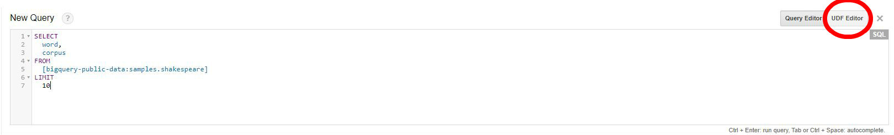
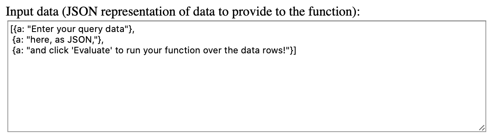
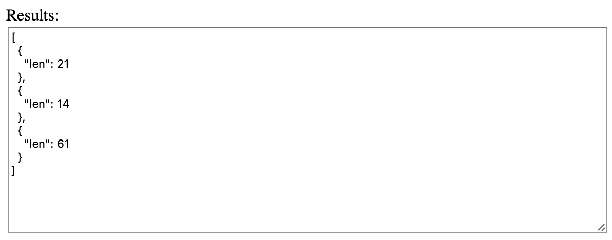
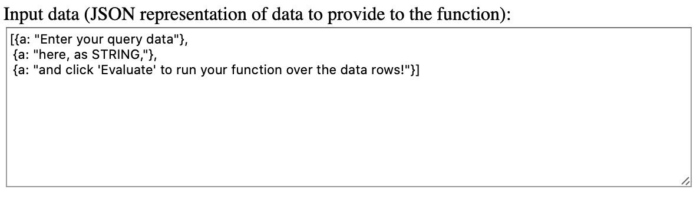
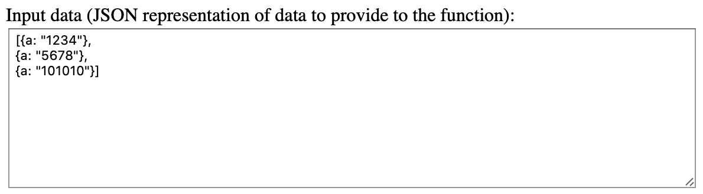
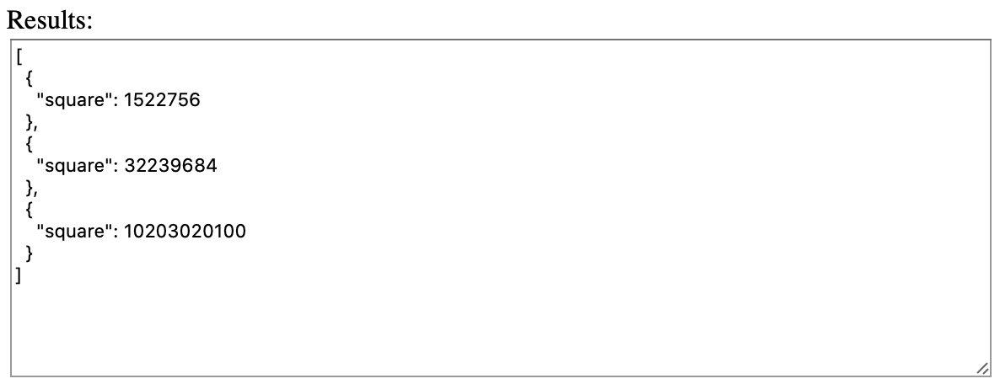
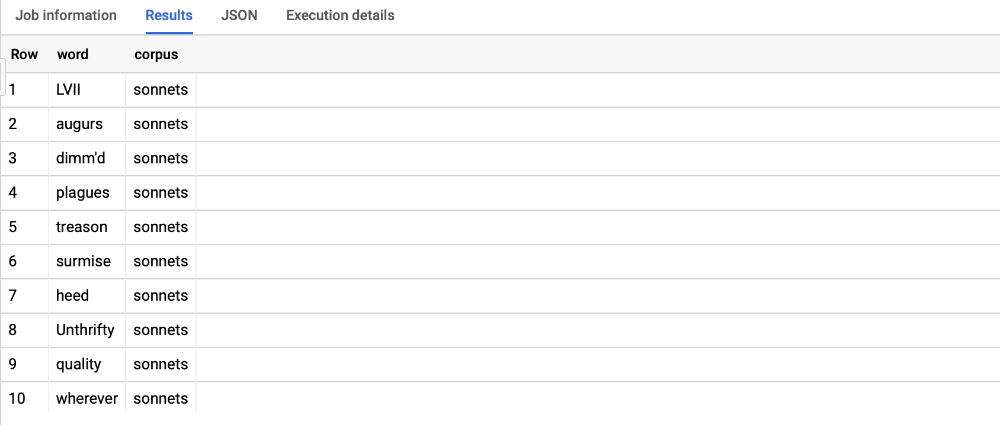
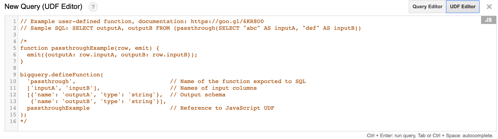
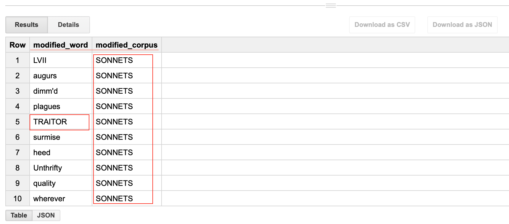
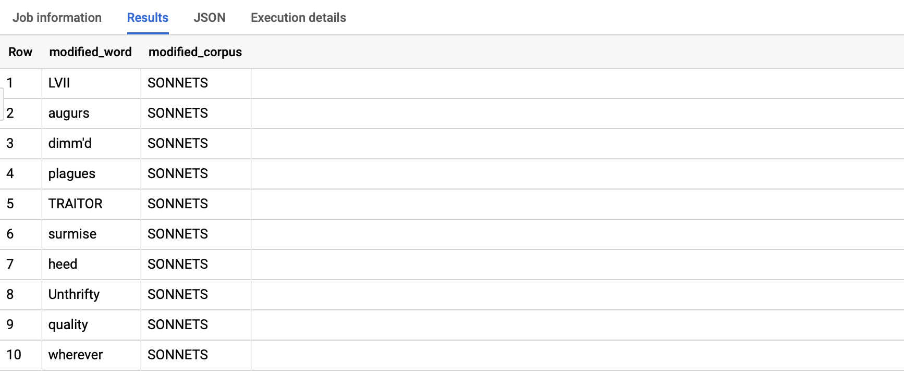

LINKS
March 8, 2020
An article by Sergey Matrosov
You write functions here:

How does it work? Well, you pass columns from a table to some function, and this function performs actions with it, row by row, returning a new table. Let’s say there is a Pseudo-query, where Col1 (inputA) and Col2 (inputB) - values:
SELECT
outputA,
outputB
customFunction(
SELECT
Col1 AS inputA,
Col2 AS inputB
FROM
Table1)
Function:
function customFunction(row, emit) {
emit({outputA: row.inputA, outputB: row.inputB});
}function – keyword for function in JavaScript;
customFunction – name of function, which represents its actions:
- addPlusTwo
- makeStuff
- goOutOfHere
- etc.
Emit – our return.
row.inputA and row.inputB are values of some row from inputA (= Col1) и inputB (= Col2).
Function gets STRING values, so your default methods and properties are related to STRING type. I would like to show you what I mean. Let’s go here.
You will see that the table data as JSON. ‘A’ is for the column’s name, and data near it are row data.

The first row is ‘‘Enter your query data’’.
The second is ‘‘here, as JSON‘‘.
The third is ‘and click “Evaluate” to run your function over the data rows!’
| Row number | a |
| 1 | Enter your query data |
| 2 | here, as JSON, |
| 3 | and click ‘Evaluate’ to run your function over the data rows! |
You then see the function.
Click on the Evaluate button, and you’ll get data like in BigQuery:

Or
| Row number | len |
| 1 | 21 |
| 2 | 14 |
| 3 | 61 |
But what is going on here? Check User-defined function. You’ll notice that it uses ‘length’ property near ‘a’, which counts the length of the string.
Let us rebuild this function like this (where “replace” is the string method):
function customFunction(row, emit) {
emit({new: r.a.replace("JSON", "STRING")});
}Evaluate:

Or
| Row number | new |
| 1 | Enter your query data |
| 2 | here, as STRING, |
| 3 | and click ‘Evaluate’ to run your function over the data rows! |
Word ‘JSON’ became word “STRING”.
Now let’s do something cooler. Let’s change input data like this:
[{a: “1234”},
{a: “5678”},
{a: “101010”}]

and write the new function ‘Square’, which squares our input from each row:
function Square(r, emit) {
var value = r.a; // assign row value to var value
var square = value ** 2; // square value and assign to var square
emit({square: square}); // save var square to column named “square”
}We then get this:

Or
| row | square |
| 1 | 1522756 |
| 2 | 32239684 |
| 3 | 10203020100 |
Now let’s do this in the new BigQuery interface. Everything we have said mostly relates to Legacy SQL, so let’s do it using the dialect of SQL in the old BigQuery interface, and we will rewrite it with Standard SQL afterwards.
SELECT
word,
corpus
FROM
[bigquery-public-data:samples.shakespeare]
LIMIT
10The result is:

Now you click on UDF Editor:
Another thing to do is to define your function (prototype) in BigQuery. The template of the function is already given in UDF Editor:

Our function will be pretty simple:
function changeWordsAndCorpus(row, emit) {
var word = row.word;
var corpus = row.corpus;
if (word == 'treason') {
word = 'TRAITOR';
}
if (corpus == 'sonnets') {
corpus = 'SONNETS';
}
emit({modified_word: word, modified_corpus: corpus});
}
bigquery.defineFunction(
'changeWordsAndCorpus', // Name of the function exported to SQL
['word', 'corpus'], // Names of input columns
[{'name': 'modified_word', 'type': 'string'}, // Output schema
{'name': 'modified_corpus', 'type': 'string'}],
changeWordsAndCorpus // Reference to JavaScript UDF
);We then rewrite our query:
SELECT
modified_word,
modified_corpus
FROM
changeWordsAndCorpus(
SELECT
word,
corpus
FROM
[bigquery-public-data:samples.shakespeare]
LIMIT
10)When we run the query, here is the result:

Now it’s time to do this via Standard SQL in the new BigQuery interface. It is a bit tricky.
CREATE TEMP FUNCTION
changeWord(word STRING)
RETURNS STRING
LANGUAGE js AS """
if (word == 'treason') {
word = 'TRAITOR';
}
return word;
""";
CREATE TEMP FUNCTION
changeCorpus(corpus STRING)
RETURNS STRING
LANGUAGE js AS """
if (corpus == 'sonnets') {
corpus = 'SONNETS';
}
return corpus;
""";
SELECT
changeWord(word) AS modified_word,
changeCorpus(corpus) AS modified_corpus
FROM (
SELECT
word,
corpus
FROM
`bigquery-public-data.samples.shakespeare`
LIMIT
10)The result is the same.

Yes, you could write it using one function, returning the array to un-nest it in the query itself. But for simplicity, I made it using two functions. You can also use methods of SQL itself to do data manipulation instead of JavaScript when using your own functions.
That’s all. Good luck!
LINKS